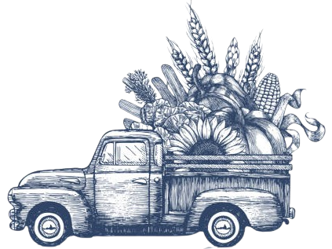
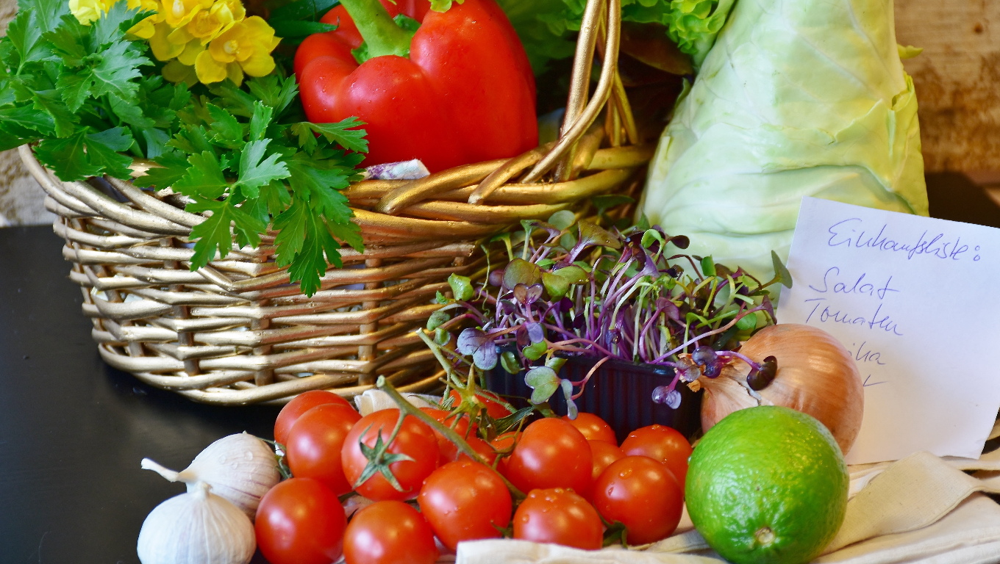
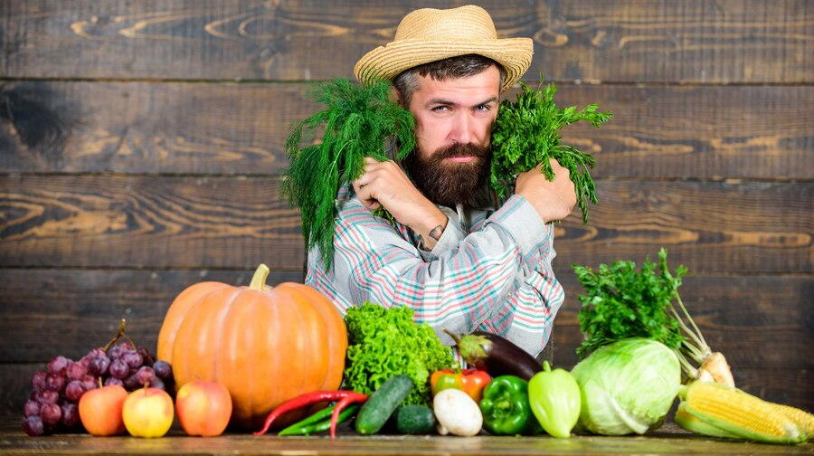
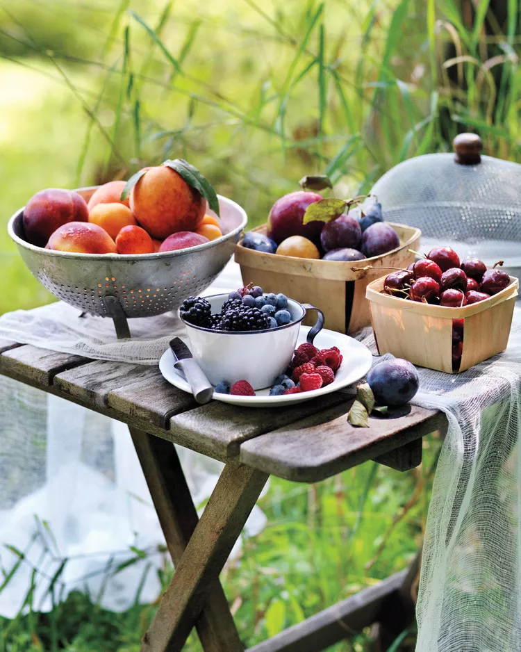
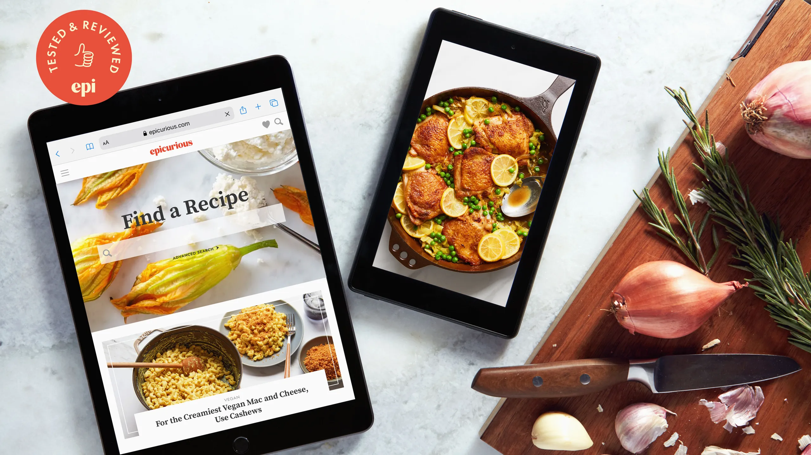
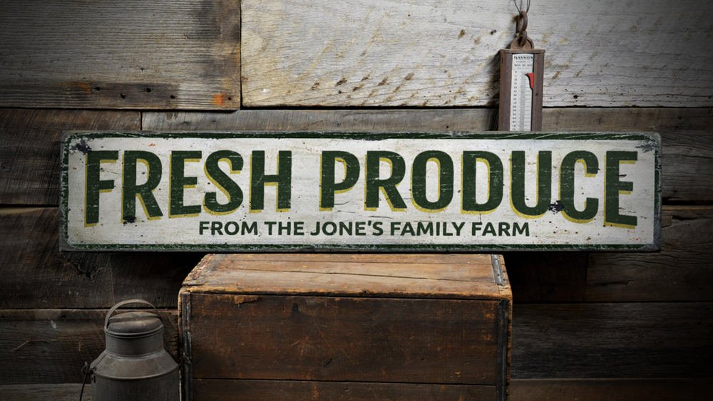
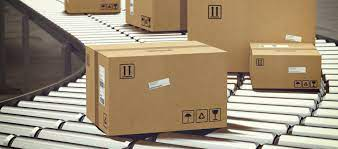

About Farm2U
Farm2U is an innovative platform that reduces food waste and connects communities through food sharing. Our mission is to create an efficient and equitable food system by enabling individuals and businesses to share surplus food with those in need. At Farm2U, we believe that no food should go to waste when there are people who can benefit from it. Join our user-friendly platform to list excess or near-expiry food items from individuals, restaurants, grocery stores, and other food-related businesses.
These items can include fresh produce, packaged goods, baked goods, and more. Our platform connects food donors with local charitable organizations, community centers, and individuals who can benefit from the surplus food. By facilitating these connections, we aim to address food insecurity and promote sustainable practices by diverting perfectly good food from ending up in landfills.
Features Available
Farm2U offers a range of powerful features that make it easy for individuals, businesses, and organizations to participate in our food sharing community. Whether you're a food donor looking to reduce waste or someone in need of fresh, nutritious food, our platform has you covered. Explore the key features below and see how Farm2U is revolutionizing the way we share and access food.-
 Wide Selection
Explore a diverse range of fruits, vegetables, herbs, and more, carefully curated from local farms.
-
 Locally Sourced
Support local farmers and businesses by choosing our locally sourced produce, ensuring freshness and promoting community growth.
-
 Seasonal Delights
Experience the joy of seasonal eating with our rotating selection of fruits and vegetables, offering the best flavors nature has to offer.
-
 Recipe Inspiration
Access a treasure trove of recipe ideas and culinary inspiration to make the most of your farm-fresh ingredients.
-
 Transparent Sourcing
Know exactly where your food comes from with our transparent sourcing information, fostering trust and connection with the farmers.
Services Offered
At Farm2U, we are dedicated to providing a comprehensive range of services that support our mission of reducing food waste and promoting food access. Our platform connects food donors with those in need through a seamless and user-friendly experience. Explore our services below and see how Farm2U is transforming the way we share and distribute surplus food, ensuring that no one goes hungry.-
 Easy Browsing
Easy Browsing
Experience a user-friendly interface that makes it easy to navigate through products and categories.
-
 Payment Alternatives
Choose from a variety of secure payment methods to complete your purchase, ensuring convenience and peace of mind.
-
Mobile-Friendly Design
Access the website seamlessly on your mobile device, with a responsive design that optimizes browsing and purchasing on smaller screens.
-
Reviews & Ratings
Read authentic customer reviews and ratings for products, helping you make informed decisions based on others' experiences.
-
24/7 Customer Support
Get assistance and support anytime you need it, with a dedicated customer support team available round the clock to address any queries or concerns.